Most recent recipes
Sticky soy sauce salmon rice bowl
20 mins
Serves 2
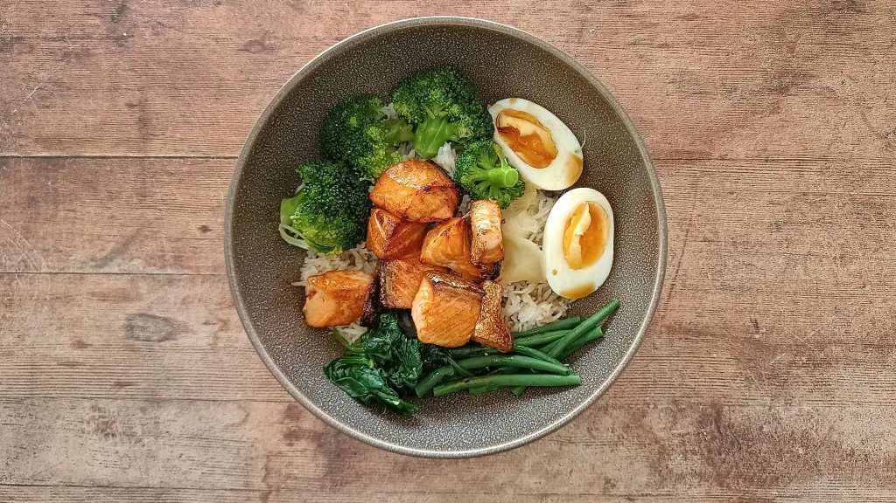
Pecan and ginger flapjacks
50 mins
Serves 16
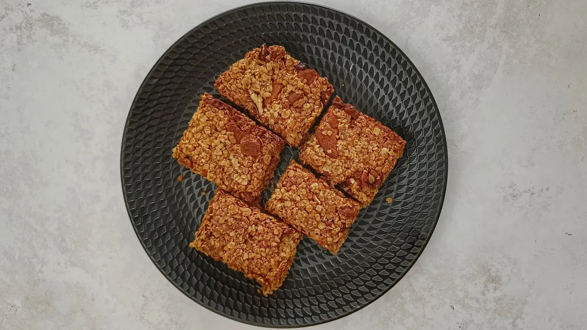
Creamy roasted red pepper and chicken pasta
27 mins
Serves 6
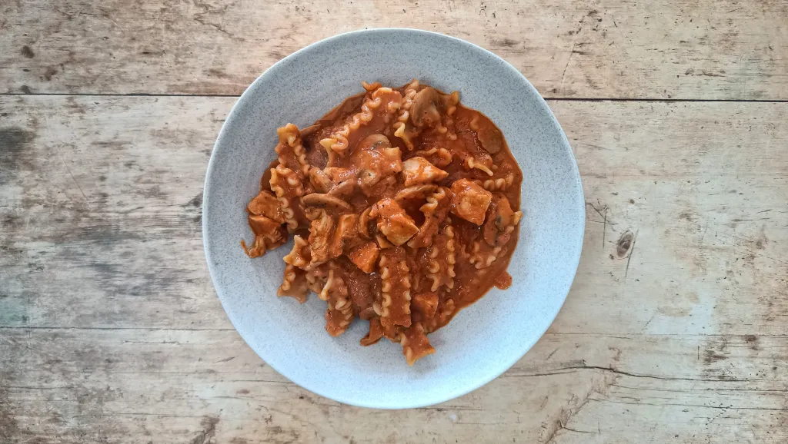
Bun cha
46 mins
Serves 4
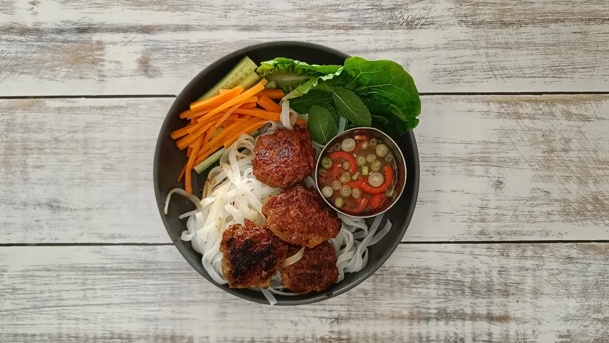
Char-siu-style pork tenderloin
23 mins
Serves 3
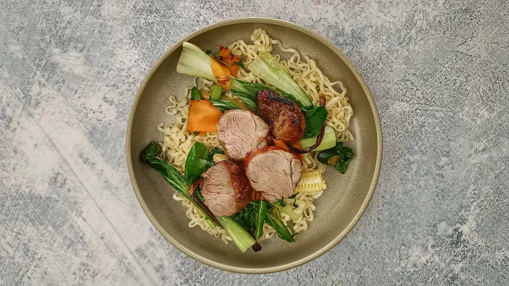
Summer pasta salad with corn, zucchini, and basil vinaigrette
30 mins
Serves 4
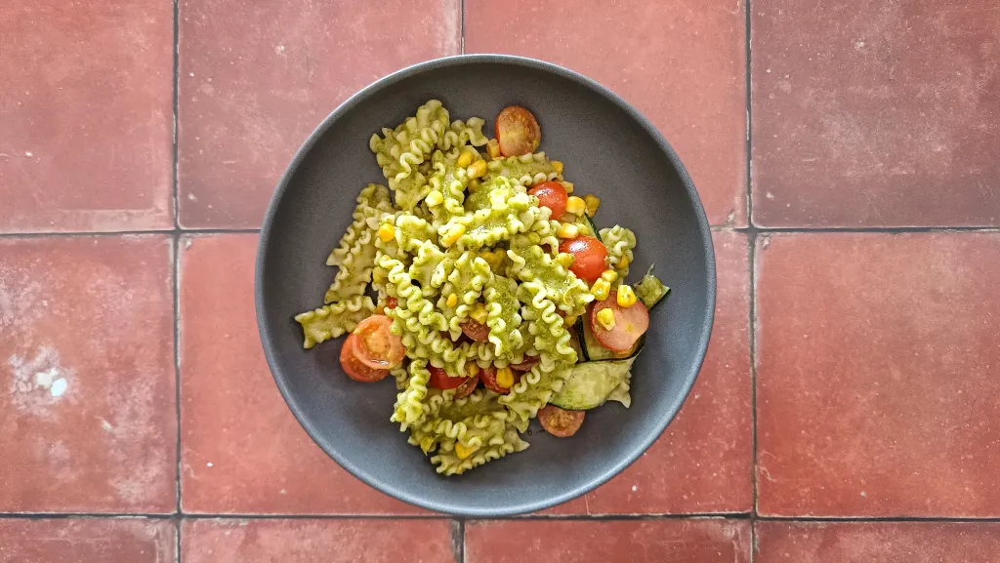
Cobb salad with mango and lime dressing
40 mins
Serves 4
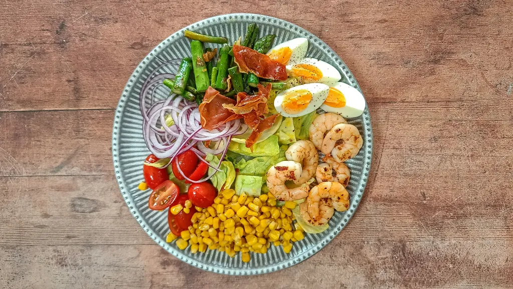
Spicy lamb and baharat parcels
40 mins
Serves 2
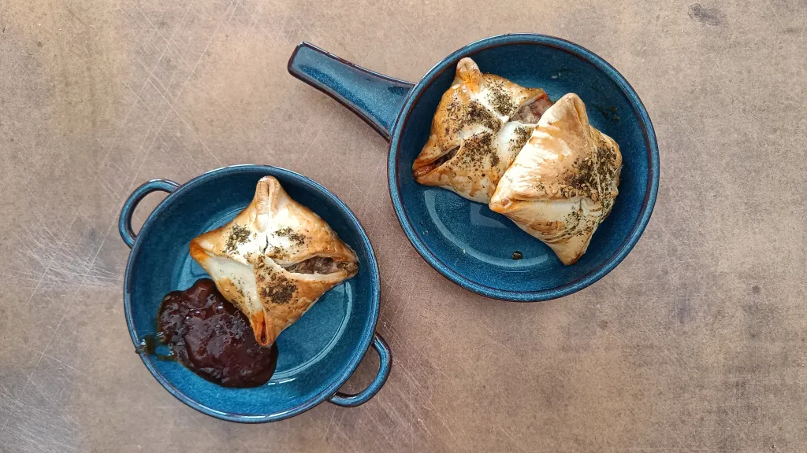
Payn ragoun (medieval pine nut and ginger candy)
35 mins
Serves 16
Claypot chicken rice
55 mins
Serves 4
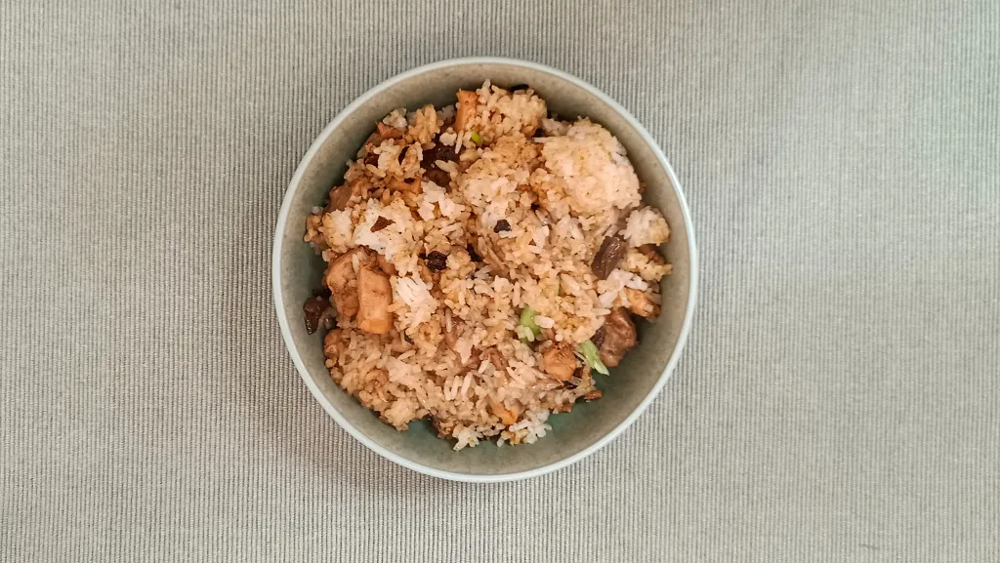
Spicy salmon burgers with sriracha mayo & pickles
36 mins
Serves 4
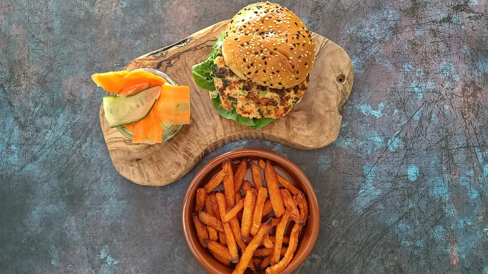
Cajun-style chicken fillets
43 mins
Serves 4
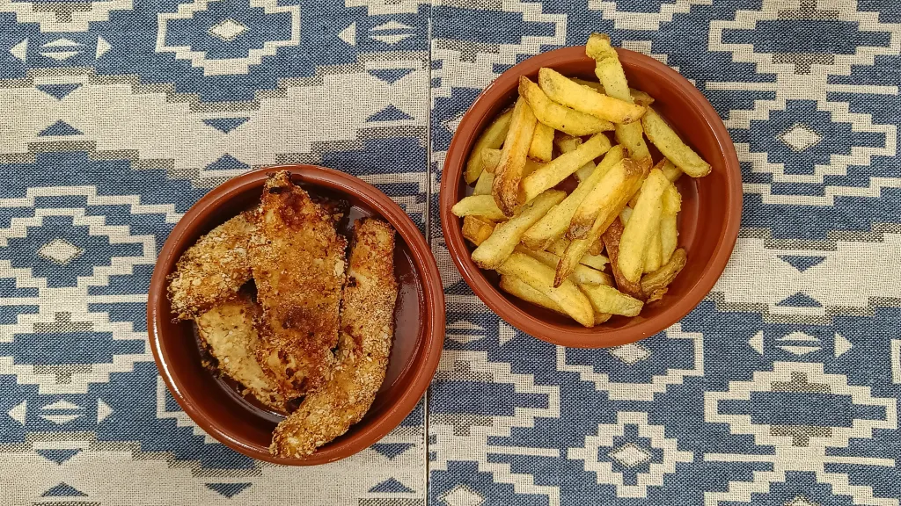
Orange sponge cake
1 hr 35 mins
Serves 15
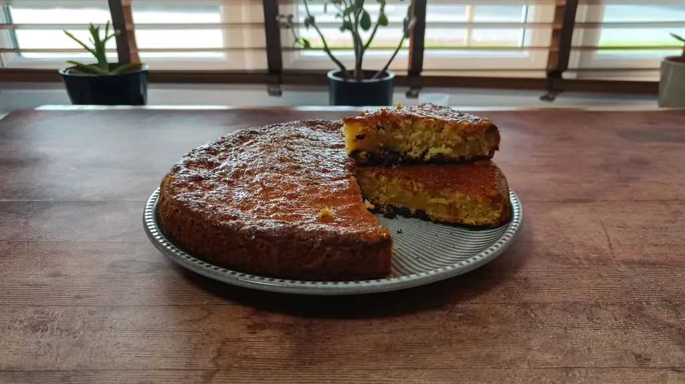
Lamb, courgette & orange stir-fry
25 mins
Serves 4-6
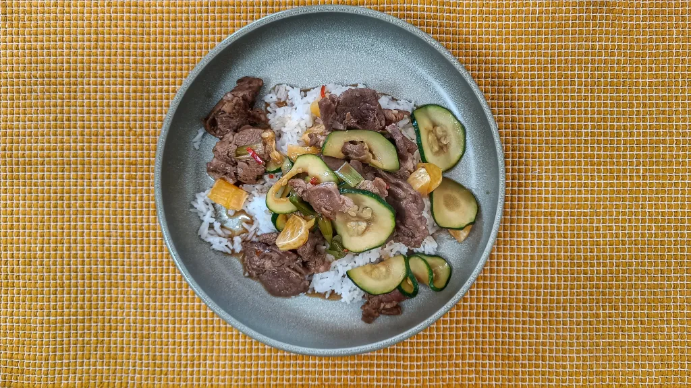
Courgette, dill & lemon farfalle
20 mins
Serves 4
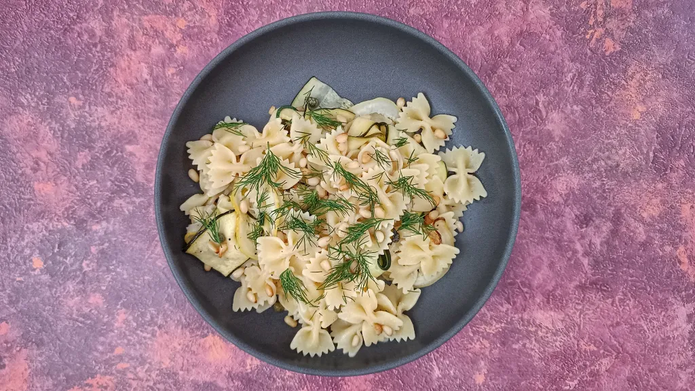